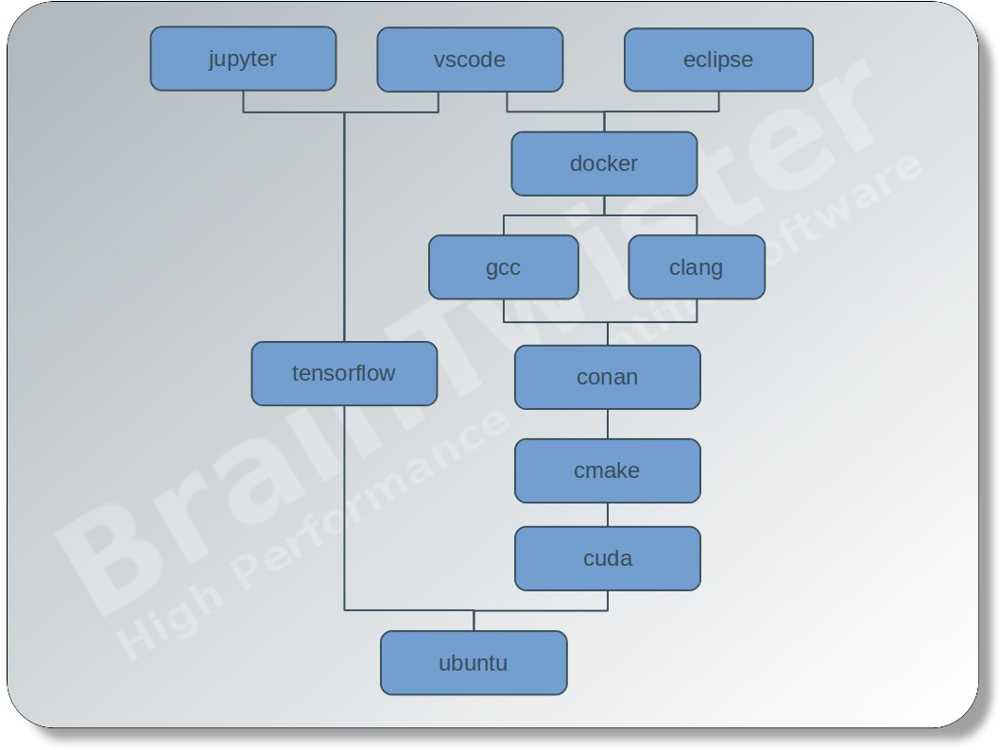

Docker containers for software development
Docker enables a great way for fast, small, reproducible, and portable software development environments.
The advantages are:
- Fast build and execution compared to virtual machines
- Portability: Same environment on different machines, platforms, and operating systems
- Reproducible behaviors
- Economical consumption of resources
- Identical environment for development IDE and continuous integration
- Easy provisioning of images
Docker images
Each directory correspond to an environment module. They can stick together as a chain:
module1 - module2 - module3 - ...
The image module1-module2-module3 is using the image module1-module2 as base, which will be set using the build-time variable BASE_IMAGE. For example the image ubuntu-16.04-cmake-3.12 will be build with
cd cmake-3.12
docker build -t braintwister/ubuntu-16.04-cmake-3.12 --build-arg BASE_IMAGE=braintwister/ubuntu-16.04 .Please find a list of available images at images.yml. The images in the list will be build automatically with Jenkins and pushed to DockerHub.
The docker images can be pulled with
docker pull braintwister/<image-name>
Eclipse IDE
Eclipse IDE for C++ development
A ready-for-action eclipse IDE with
- CMake
- GCC
- conan.io
- docker-engine
installed can be started by
docker run -d -v /tmp/.X11-unix:/tmp/.X11-unix:ro -e DISPLAY \
braintwister/ubuntu-16.04-cmake-3.12-gcc-7-conan-1.6-docker-18.06-eclipse-cpp-4.7.3or using docker-compose by
version: "3"
services:
eclipse:
image: braintwister/ubuntu-16.04-cmake-3.12-gcc-7-conan-1.6-docker-18.03-eclipse-cpp-4.7.3
volumes:
- /tmp/.X11-unix:/tmp/.X11-unix:ro
environment:
- DISPLAY
privileged: trueThe mount of the X11 socket file (/tmp/.X11-unix) and the definition of the environment variable DISPLAY induce the application within the container to send the rendering instructions to the host X server. To allow the container to use the host display, the command xhost +local: must be executed on the host before starting the container. The privileged mode is needed for debugging with gdb.
Eclipse IDE Photon
Eclipse Photon can be started with the latest GCC compiler by
docker run -d -v /tmp/.X11-unix:/tmp/.X11-unix:ro -e DISPLAY \
braintwister/ubuntu-18.04-cmake-3.12-gcc-8-conan-1.6-docker-18.06-eclipse-cpp-4.8Eclipse IDE for CUDA development
First of all nvidia-docker version 2 must be installed and the runtime attribute must be set to nvidia, that the container get access to the host GPU card. The nvidia runtime attribute is currently only available at docker-compose version 2.3.
For CUDA development the NVIDIA IDE nsight is highly recommended, because it provides special support for code editing, debugging, and profiling. The version of nsight is not adjustable, as it depends to the version of the cuda module.
version: "2.3"
services:
eclipse:
image: braintwister/ubuntu-16.04-cuda-9.2-cmake-3.12-gcc-7-conan-1.6-nsight
runtime: nvidia
volumes:
- /tmp/.X11-unix:/tmp/.X11-unix:ro
environment:
- DISPLAY
privileged: trueEclipse IDE for embedded development
To use the Eclipse CDT Arduino plugin simply choose the eclipse-arduino module and bind the serial port of your Arduino connection (here: /dev/ttyACM0):
version: "3"
services:
eclipse:
image: braintwister/ubuntu-16.04-cmake-3.12-gcc-7-conan-1.6-docker-18.06-eclipse-arduino-4.7.3
volumes:
- /tmp/.X11-unix:/tmp/.X11-unix:ro
- /dev/ttyACM0:/dev/ttyACM0
environment:
- DISPLAY
privileged: truePersistent storage
The data in the container can be made persistent by using a docker volume home for the home directory /home/user.
version: "3"
services:
eclipse:
image: braintwister/ubuntu-16.04-cmake-3.12-gcc-7-conan-1.6-docker-18.06-eclipse-cpp-4.7.3
volumes:
- /tmp/.X11-unix:/tmp/.X11-unix:ro
- home:/home/user
environment:
- DISPLAY
privileged: true
volumes:
home:Project-assigned development environment
The docker development environment can be directly stored within the source code repository and is able to bind the working directory of the source code into the development container. Therefore, the user in the container must be the owner of the source code working directory on the host. The user in the container can be set with the environment variables USER_ID, GROUP_ID, USER_NAME, and GROUP_NAME. In the following example the docker-compose file is stored in the root directory of a git repository. Starting docker-compose up -d in the root directory the current directory . will be bound to /home/${USER_NAME}/git/${PROJECT}. It is recommended to set the variables in an extra file .env, which is not controlled by the source control management, so that the docker-compose file must not be changed.
version: "3"
services:
eclipse:
image: braintwister/ubuntu-16.04-cmake-3.12-gcc-7-conan-1.6-docker-18.06-eclipse-cpp-4.7.3
volumes:
- /tmp/.X11-unix:/tmp/.X11-unix:ro
- home:/home/${USER_NAME}
- .:/home/${USER_NAME}/git/${PROJECT}
environment:
- DISPLAY
- USER_ID=${USER_ID}
- GROUP_ID=${GROUP_ID}
- USER_NAME=${USER_NAME}
- GROUP_NAME=${GROUP_NAME}
privileged: true
volumes:
home:The .env-file can be generated by
cat << EOT > .env
PROJECT=`basename "$PWD"`
USER_ID=`id -u $USER`
GROUP_ID=`id -g $USER`
USER_NAME=`id -un $USER`
GROUP_NAME=`id -gn $USER`
EOTJenkins build container
A declarative Jenkinsfile can look like
pipeline {
agent {
docker {
image 'braintwister/ubuntu-16.04-cmake-3.12-clang-6-conan-1.6'
}
}
stages {
stage('Conan') {
steps {
sh 'conan install .'
}
}
stage('CMake') {
steps {
sh 'cmake .'
}
}
stage('Build') {
steps {
sh 'make all'
}
}
stage('Test') {
steps {
sh 'make test'
}
}
}
}